Abstract
In this final project, inspired by the lecture of physical simulation and animation, we decided to implement cloth simulation and simple animation on a human-like figure. We use mass-spring system to construct a cloth (or a curtain) and use explicit method (verlet integration) to simulate the cloth at every timestep. Also, we use forward kinematics to animate the cubeman, with linear interpolation.
Technical approach
Part 1: Cloth simulation
In order to simulate the cloth, we need to use a simple model to represent cloths. One of the most popular choices of representing cloth is mass-spring system. In mass-spring system, we can assume the cloth is composed of lots of small particles with weight (mass), and they are connected by springs. The advantage of mass-spring system is that it is very straight forward and intuitive, and it can also simulate the cloth effect accurately.
In this particular case of cloth simulation, we connect some pairs of particles with springs and we provide the original distance between those objects, which the distance between particles when the cloth is static (without any external force).
Here we instroduced three kind of different constraints in order to simulate the realistic cloth effect; the particles that are neighbors in vertical and horizontal positions (the bold line illustrated below) would have a strong connection, and we add a spring between every pair of such neighbors (else the cloth will collapse). This is the structural constraint.
Then, for every pairs of particles that are neighbors in diagonal positions, we add a spring between them with weaker constraint, and this simulate the shearing resistence of the clothes. (Illustrated in normal line.) aka. shear constraint.
Next, we connect every pairs of particles one particle away in horizontal and vertical positions with a weak spring, which simulates how cloth resists bending. Here are the illustration of the whole mass-spring system:
| 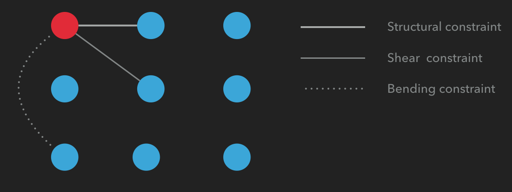 |
Also note that we need to quantify what it means to be a strong connection or a weak connection, and we use the stiffness of spring and damping factor to quantify them. Based on the Hooke's Law shown below, when the connection is strong (structral constraints), we give the springs higher stiffness value. If the connection is weak, we give the springs lower stiffness value. Moreover, we need to apply a damped force to simulate the law of conservation of energy (Else we will have a perpetual motion machine).
| 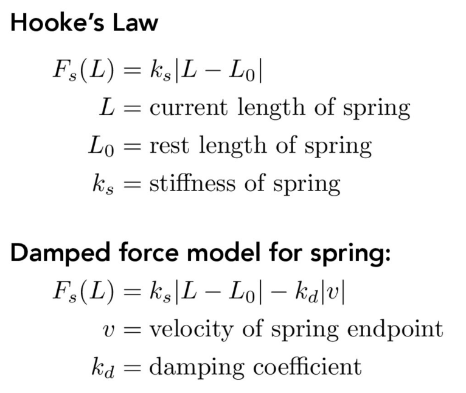 |
After constructing the cloth, we start to simulate the motion effect of cloths (how cloths will behave after applying force to them). The core function for updating paticles' position is surprisingly simple, but also powerful: verlet integration. Our particles have specified amount of mass, therefore they obey Newton's second law. Verlet integration is a numerical method used to integrate Newton's equations of motion, and it is a explicit integration method (solving state at t+1 from state at t, where t is an amount of time). The equation of verlet integration is:
| 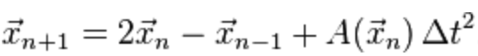 |
We are given old position Xn-1, current position Xn, and we can calculate the acceleration by mass and force applied on a particle. Timestep are provided as a parameter and can be modified. Therefore, we can easily update the new position for each particle by their previous position in each iteration.
Next, we can apply the proper force on both of particle by using how much the current distance is different from static distance and the stifness value of the spring. If current distance is large than original, we apply a force to the center in order to make the partical go back to its original position and static status (which is the property of spring). Also, in the program, we can apply external forces like gravity and wind, which is trivial. Here is the illustration:
| 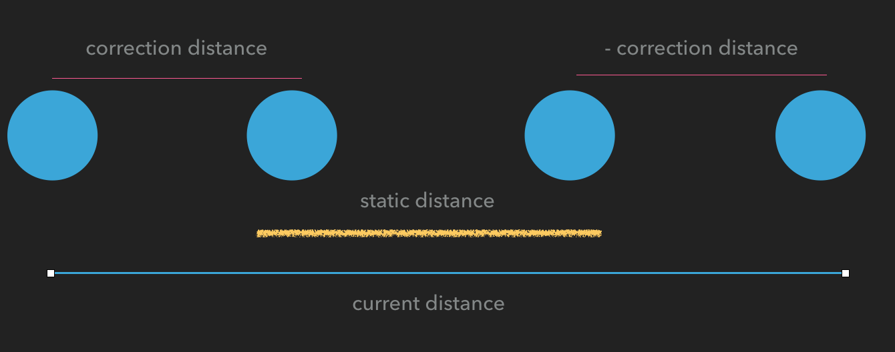 |
Using the mass-spring system and verlet integration, we now have a perfect simulated cloth:
| 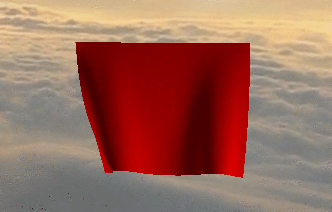 |
For the collision detection, we check every single particle in the cloth for each time step and see if it is inside primitives like sphere and cube. If so, we will apply a force upon the normal vector of that point. Here is the collision effects:
| 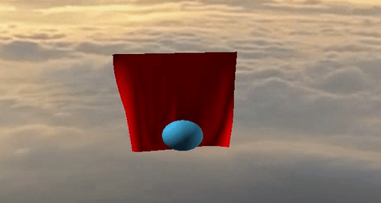 |
Part 2: Animation
For this part, we animate the cubeman described in the course lecture. We used forward kinematics to implement the animation.
First, we represent the human as a skeleton that composed of "bones" and "joints". Here is the illustration of the structure of cubeman.
|
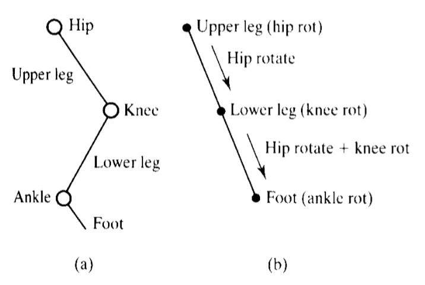
|
Forward kinematics is a technique where we have joint parameters: angles, length and positions and use them, formula below and specified duration (elapse of time) to calculate the the position of end effector p.
| 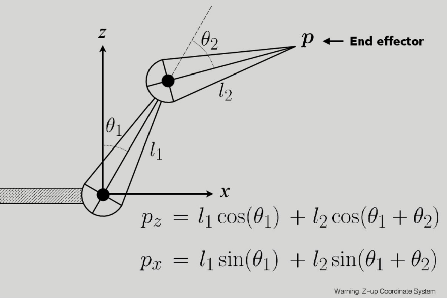 |
Based on the data provided in the book (mentioned in reference section). We have eight main frames of the animation: as the picture below shown:
|
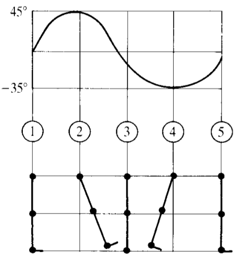
|
In order to update the end effector each frame, it is necessary to traverse through all the joints and bones and update their positions. It is obvious that the cubeman we constructed is a tree structure: with the main body as the root and arms and legs as branches. Therefore, we can use DFS to traverse the body hierarchy from the root (the main body) to every components of the body and update their positions by accumulating the transformation matrix at each depth.
We can change the rate of the animation, and in each iteration, we basically just loop through a loop of frame: [frame1, frame2 ... frame 8], and by a timer, we can know where we are at. Without loss of generality, assume we are between frame1 and frame2, then based on the elapsed time, we linearly interpolate the position of each body components in frame1 and frame2 based on time.
Finally, we attach a cape to the human figure, and apply a wind force to cloth proportional to the rate of figure's movement.
Here is the running cube-man: (running cube-man with cape is in the result section)
| 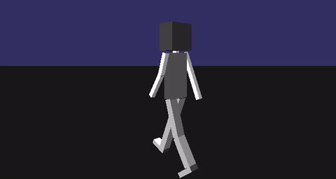 |
Part 3: Skybox and Camera
We implemented an skybox in order to have a cool environmental backgroud. We firstly load the cube map as textures. As we know, a cube map is basiclly contains 6 individual 2D texture each for one side of the cube box. Then we make a huge box size of 1x1x1. We map the texture on the box by the proper corodinates.
| 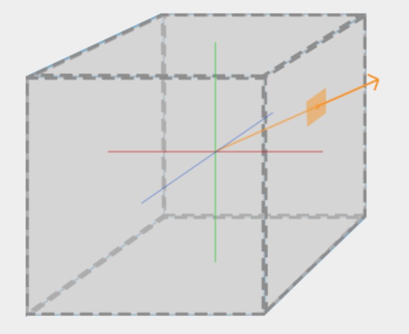 |
For the camera part, we use gluPerspective function to help change the views. While we are changing the angle, we can achieve zoom in and zoom out features. And when we change the viewing angle theta and phi (spherical coordinates), we can update the camera positon through gluLookAt function with the new calculated corodinate, which allow user to look around the whole environment. The equation for calculating the corodinates is:
x = -2*diameter*sin(th)*cos(ph)
y = 2*diameter*sin(ph);
z = 2*diameter*cos(th)*cos(ph)
| 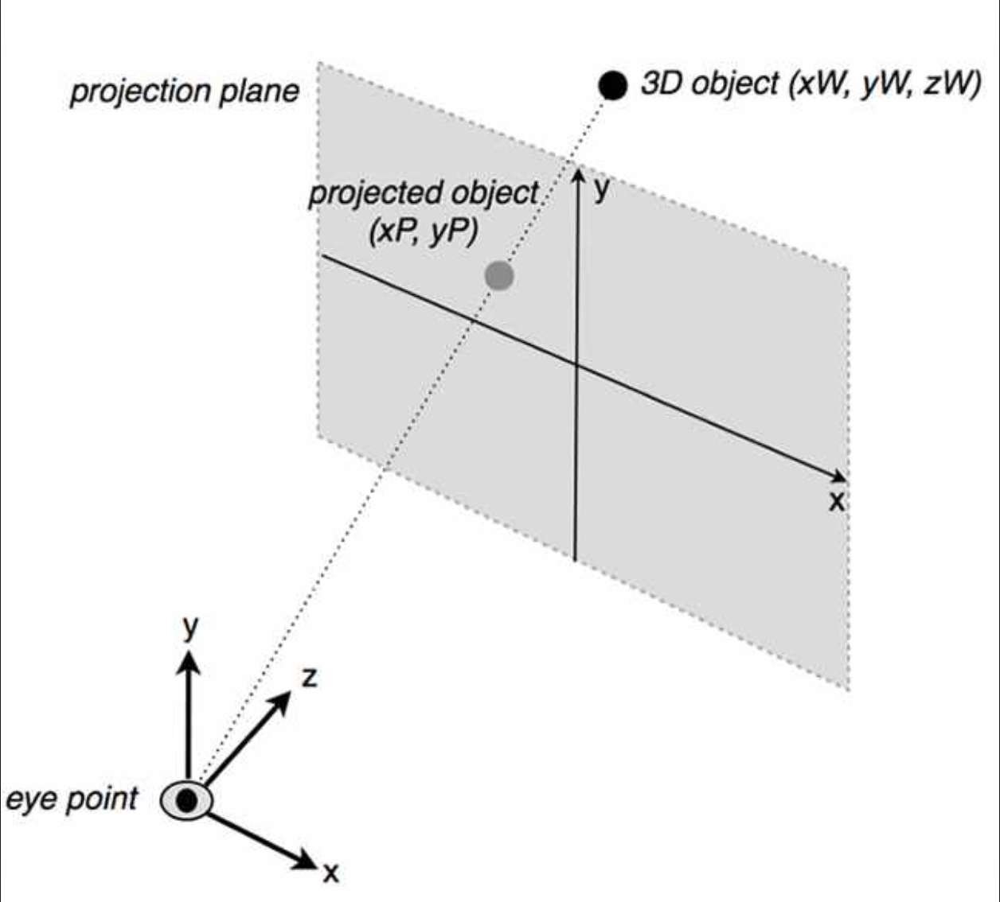 |
Here is the final result of the skybox and camera:

|
Part 4: Shading
We used openGL to implemented a simple Blinn-Phong shading model and normal shading.
The basic idea behind smooth normal shading for clothes is simple: because of the fact that our cloth is composed of a grid of particles, we can see the cloth as a rectangle composed of many triangles. Then, in every iteration, when we update the position of particles, we also update the normals of every vetices (particles). Then, using the vertices' normal, we can perform a smooth shading by linear interpolating the normals of three vertices by the barycentric coordinates of the triangle.
Shading result:
Results
Here are the demos for our project.

|
| 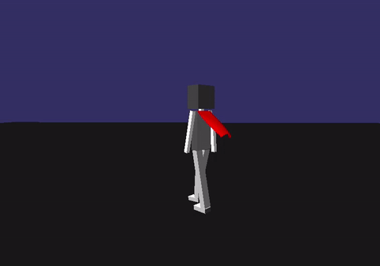 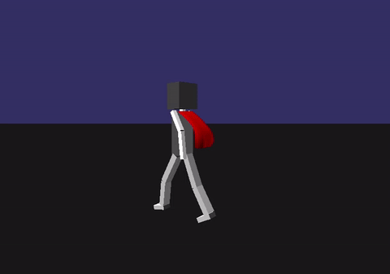 |
What we learned, problems we encountered, and possible further imporvements.
Honestly, in our initial project proposal, we planned to implement both explicit and implicit integration for cloth simulation. However, when we are implementing implicit integration, two problems emerge: 1. The math of implicit integration (backward Euler) is a little difficult for us to understand... (Because of our lack of mathematical maturity.) 2. When we want to forget about understanding the formula and just implement it, it turns out that it is also very tricky to implement because of the fact that implicit methods need us to use both the current state and later state of the system, which is nontrivial and we did not finish debug the program for implicit integration.
I think the biggest thing we learned from this project is that computer graphics is such a large field and it requires a lot of math... Because when we are researching, we find formulas in papers are really hard to read/understand. The project we do is not very mathy, and we hope in the future we can implement some fancier rendering effects like subsurface scattering after we improve our math skill.
There are many possible improvements I can think about. First, using implicit intergration to simulate cloth, and implement inverse kinematics. Next, our collision detection only applies for simple geometric shapes (primitives), and there is no self-collision (cloth collides with cloth). Then, our cloth simulation's limit is approximately 60x60 particles in order to render without apparent decrease in framerate, and we can possibly optimize it using CUDA and parallel computation. Finally, it will be nice if we can actually put the cloth on a human mesh, rather than attach a cape on it.
References
Cloth simulation: Real time cloth animation
Cloth simulation: Large Steps in Cloth Simulation.
Forward kinematics system: Advanced Animation And Rendering Techniques -- Theory And Practice, p391
OpenGL syntax and camera movement: OpenGL Tutorial.
Skybox: Skybox tutorial
Contributions from each team member
Yimin Lin: Code structuring, Animation, class design, wind and shading effect of cloths.
Xinhao Li: Cloth simulation and related effects
Yihe Lu: Eye-viewing camera setting and skybox texture mapping.